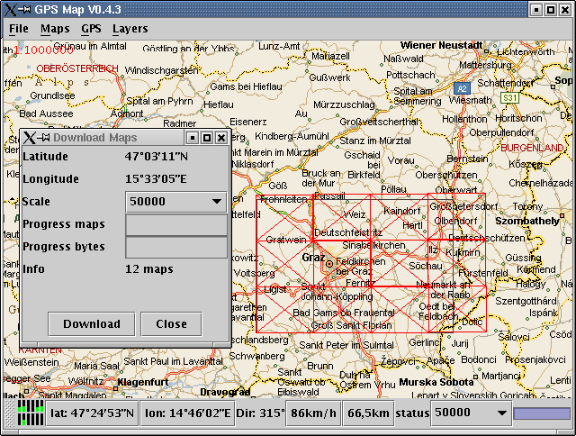
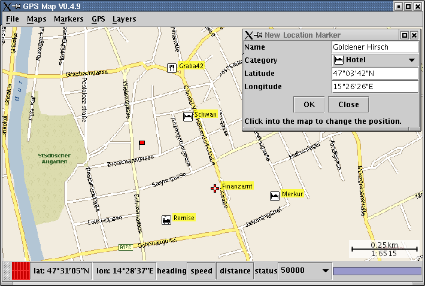
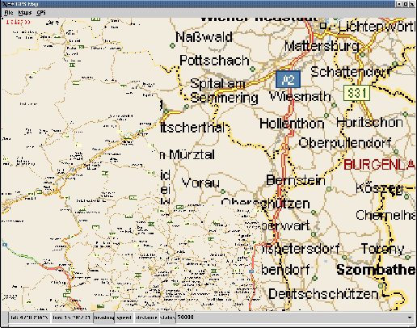
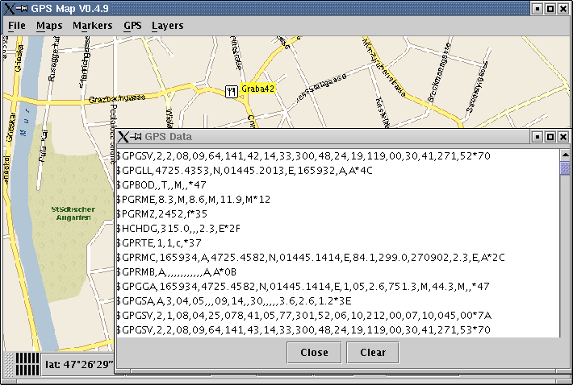

GPSylon allows to define an area for which maps should be downloaded.
GPSylon stores the markers in a relational database (or with limited functionality in a comma separated file). It supports different categories that can be switched on or off.
Different maps with different scales are displayed, so missing maps for a given scale do not result in an empty space (click on image to get a enlarged version).
For debugging (or for pure interest) it is sometimes useful to see the raw gps data (NMEA) of the gps device.
Please report any comments, bugfixes, ... to
Christof Dallermassl